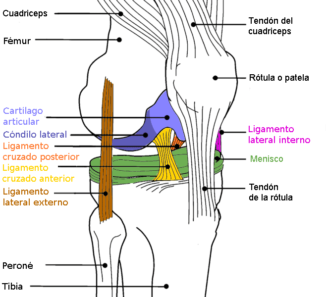
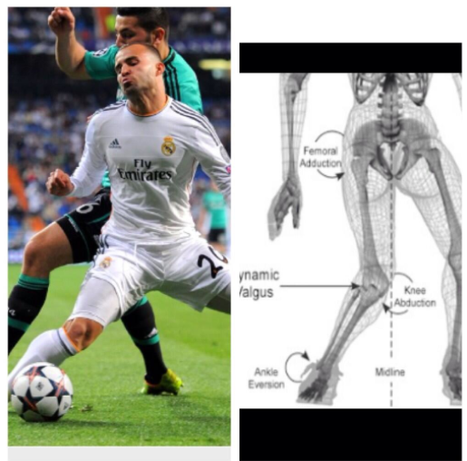
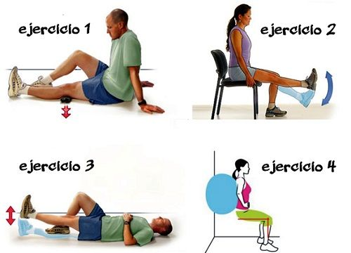

Lesiones de LCA en el Fútbol
Las lesiones del ligamento cruzado anterior (LCA) son comunes en el fútbol debido a la combinación de movimientos explosivos, giros bruscos y cambios rápidos de dirección. La alta intensidad de los entrenamientos y partidos, junto con la falta de preparación adecuada en algunos casos, aumenta el riesgo. Además, factores como el terreno de juego y la fatiga también juegan un papel importante. Es fundamental mejorar la prevención a través de entrenamientos específicos, el uso de técnicas adecuadas y el fortalecimiento muscular para reducir la incidencia de estas lesiones.



Volver a los Proyectos